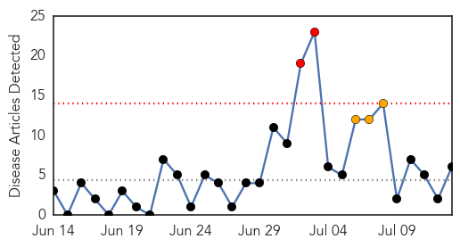
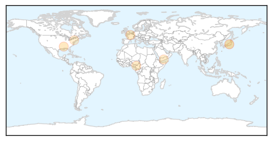

Cholera
30-Day Web Trend
0 alerts, 0 warnings

30-Day Twitter Trend
1 alerts, 0 warnings

Article Locations


Article Confidences

Top Articles:
- 0.999
- South Sudan: Cholera treatment centre opened in Juba
- 0.999
- Mdecins Sans Frontires opens cholera treatment center in Juba
- 0.999
- What Is Cholera? What Causes Cholera?
- 0.999
- Médecins Sans Frontières opens cholera treatment center in Juba
- 0.993
- No vaccination during Godavari Pushkarams
- 0.975
- School experts comment on first real-life trial of successful oral cholera vaccine
- 0.969
- We now have a cheap and effective cholera vaccine
- 0.961
- Rising Water Price in S. Sudan Compounds Cholera Outbreak
- 0.934
- A city exposed: Oxfam Media Brief July 2015 - South Sudan
- 0.846
- Sudan raises alert level to prevent cholera transmission from S. Sudan - Xinhua
- 0.843
- Sudan raises alert level to prevent cholera transmission from S. Sudan
- 0.837
- Cholera cases increasing in South Sudan as the cost of clean water skyrockets
- 0.818
- Cholera cases multiply as cost of clean water skyrockets in South Sudan capital: Oxfam
- 0.732
- Five of the most devastating pollution disasters in South Africa’s history
- 0.678
- How mobile phones are saving lives in Ghana
- 0.592
- South Sudan: UN Mission deplores killing of civilian in Organization compound
Top Tweets:
-
No tweets found for Jul 13, 2015
Measles
30-Day Web Trend
2 alerts, 3 warnings

30-Day Twitter Trend
0 alerts, 0 warnings

Article Locations
Article Confidences

Top Articles:
- 0.994
- Deadly disease outbreak in KZN ‘under control’
- 0.726
- California’s Tough Vaccination Law
- 0.696
- Many physicians fail to routinely recommend vaccinations
- 0.653
- “The Measles Situation Is Under Control”
- 0.636
- Ahead of Yemen ceasefire, UNICEF sounds alarm about impact of crisis on children
- 0.560
- Dachel Media Update: NYT Praises CA for Taking Away Healthcare Rights
Top Tweets:
-
No tweets found for Jul 13, 2015